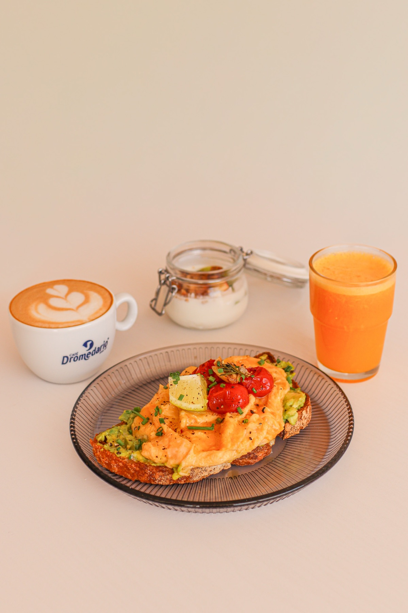
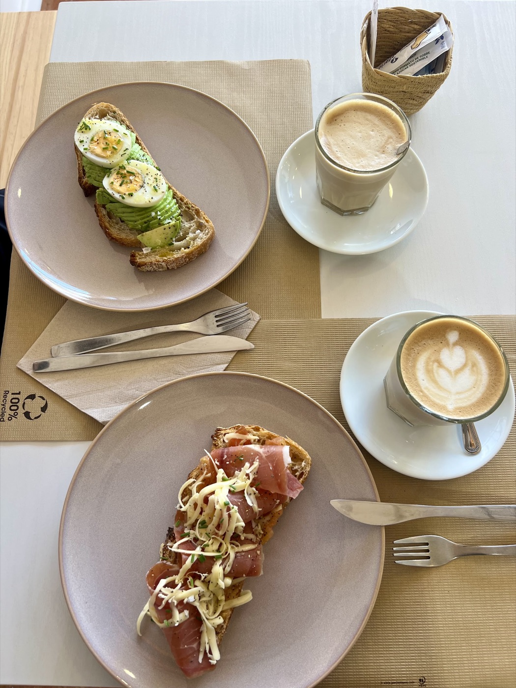
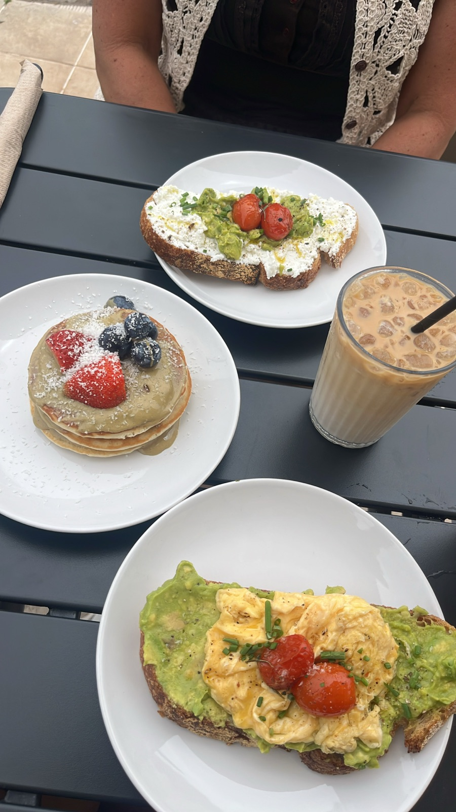
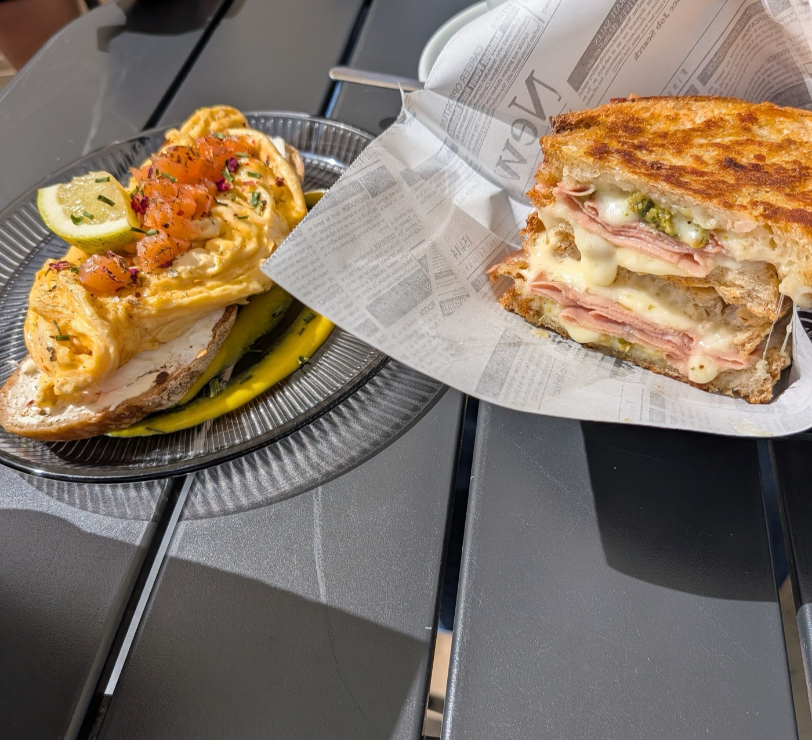
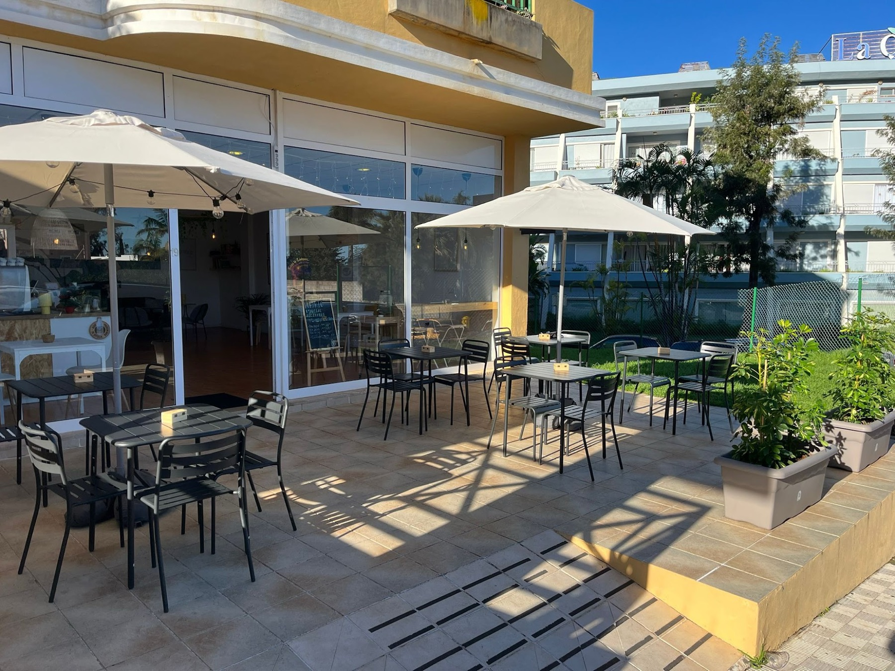
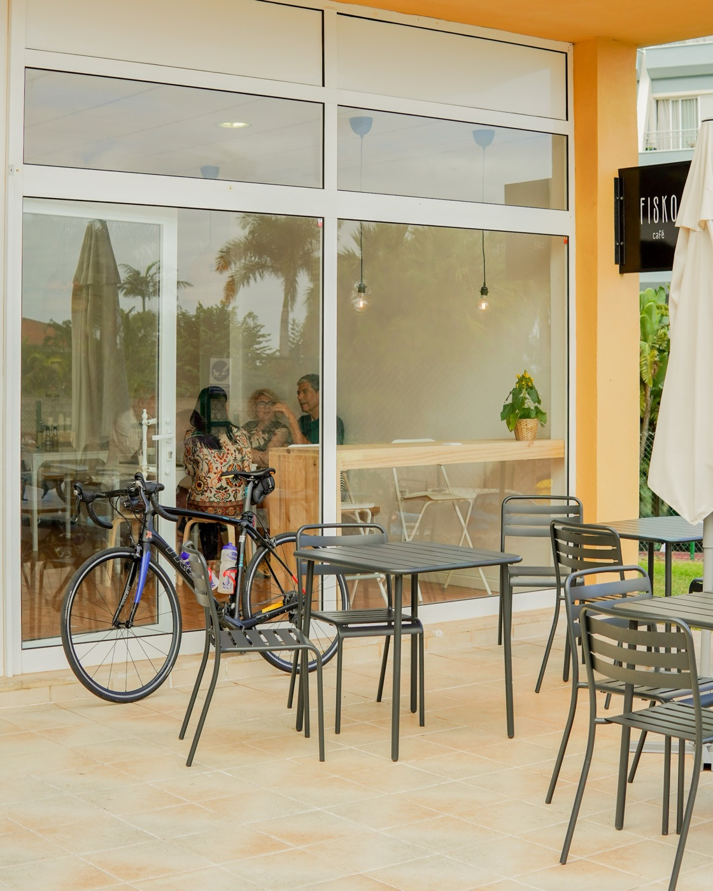

Breakfast, brunch & specialty coffee
fiskocafé · est. 2025
La Quinta · Santa Úrsula · Tenerife
A fisko of calm, coffee and good living.
Coffee roasted on La Palma, sourdough bread and local produce, on a terrace in the morning sun.
4.94.9 out of 5 stars · 148 reviews on GoogleThursday to Monday · 8 am–3 pm

- CoffeeDon Manuel, roasted on La Palma
- Bread100% sourdough loaf
- YogurtGoat's milk, 100% local
- HoneyArtisanal, from Tenerife
- GranolaHouse-made
fis·ko
noun, Canarian Spanish, since 2025
“A little, a short while, a small but sufficient amount.”
That’s how Fisko explains its name. The idea fits in a cup: specialty coffee, real bread and a quiet moment in the sun in La Quinta. “Our products are fresh, from local producers and suppliers.”
— From Fisko’s menu, 26/27 season

a sunday fisko · every day
Brunch for two
€39for 2 people
Made for sharing, slowly. Every day we’re open.
A coffee each
Café con leche, cappuccino, americano or espresso. Don Manuel specialty coffee, from Huila, Colombia.
A juice each
Made with freshly squeezed oranges: mixed berry & orange, mango & orange, or orange.
The bread basket
100% sourdough loaf, banana bread and artisan brioche, with grated tomato, extra virgin olive oil, butter and jam.
Two mains of your choice
Avocado & egg toast, veggie sandwich or bacon & egg brioche.
Something sweet to share
Honey pancakes or a goat yogurt bowl.

€18
1 pm to 3 pm
Lunch menu
Rice bowl with oven-roasted sliced chicken breast, avocado, vegetables and a griddled egg.
Includes juice of the day made with seasonal fruit, espresso or cortado, and 90 g of yogurt with fruit and granola.
the menu · 26/27 season
To eat
Sourdough and artisan brioche, creamy eggs and local produce. Prices include IGIC (Canary tax).
Avocado & egg toast
€7100% sourdough loaf with smashed avocado and creamy scrambled eggs.
Fiskodela
€8.50Sandwich on 100% sourdough loaf with juicy mozzarella, mortadella, arugula, confit cherry tomatoes and green pesto.
Classic sandwich
€5.50Artisanal brioche bread, melted Gouda and Cheddar with cooked ham. Crispy and creamy.
Veggie
€7Sandwich on 100% sourdough loaf with roasted eggplant and zucchini, arugula and smashed avocado.
Fisko chicken
€7.50Traditional and fresh! Artisanal brioche with juicy oven-roasted chicken breast, arugula, tomato, red onion and a touch of mayonnaise.
Bacon brioche
€7Slice of artisanal brioche, creamy eggs and crispy bacon with palm syrup.
Ibérico eggs
€7Creamy scrambled eggs with ham and sourdough bread, served with confit tomatoes.
Pancakes
€6.50Fluffy pancakes with fresh seasonal fruit, artisanal honey from Tenerife and shredded coconut.
Yogurt bowl 200 g
€6.50Creamy 100% local goat yogurt with fresh seasonal fruit and house-made granola.
- ExtrasEgg €1 · Avocado €2 · Bacon €1.50 · Serrano ham €2

To drink
Coffee
Don Manuel · roasted on La Palma · Huila origin
- Espresso1.40
- Double espresso1.90
- Bombón (espresso, condensed milk)1.60
- Americano2.00
- Cortado1.70
- Café con leche2.00
- Cappuccino2.50
- Leche y leche1.90
- Zaperoco3.50
- Hot chocolate with milk1.80
Extras: oat milk +0.20 · ice +0.20 · large size +0.50
Cold brew
- Caramel latte cold brew3.80
- Pistachio latte cold brew4.20
Tea & infusions
- Oat matcha latte3.00
- Black chai tea2.00
- Moroccan green tea2.00
- Chamomile2.00
- Rooibos2.00
- Ginger & lemon2.00
- Linden2.00
Fresh juices
Made to order
- Fresh orange3.80
- Juice of the day4.50
- Açaí with banana and coconut water4.80
- Coconut lemonade3.80
- Kombuchas3.50
Other drinks
- Still or sparkling water 500 ml2.00
- Le Tribute tonic2.80
- Pepsi Zero2.00
- Lager2.00
- Non-alcoholic beer2.00
Artisan pastries
- Banana bread3.70
- Pistachio & white chocolate cookie4.00
- Dulce de leche alfajor2.50
Prices in euros, IGIC included. Ask for the allergen menu at the counter. The menu changes with the season: if in doubt, just ask.
what people say
148 people have tried it
“the best coffee I had on Tenerife so far!”— Arina R., on Google
“We had breakfast here and loved it. The place is beautiful, cared for down to the last detail and very cosy. […] the toasts were spectacular, nicely presented and full of flavour, and the coffee perfect. Everything was as good as it was pretty.”(translated from Spanish)
“Lovely little cafe with staff that goes above and beyond to make you feel welcome and appreciated. […] the cacao one of the best I've had so far! It's always a great place to spend your time, especially with the sun in the morning sitting on the terrace.”
“A calm, family-feel place where they look after the product as much as the customer. […] the owner is always there, attentive and happy to recommend and advise, with great knowledge of the menu.”(translated from Spanish)
“The best breakfast place in North Tenerife. […] The coffee is very tasty as well and the service 10/10.”
“A place made with love, and it shows. The coffee surprised me in a good way, both in taste and in price. […] the place is really pretty.”(translated from Spanish)
“Great spot for Breakfast or Brunch, it has a nice view of the ocean, delicious food and good coffee! The toasts are great […]”
“The service and the atmosphere are spectacular. A magical little corner, perfect for a drink and a good time with friends. I recommend it 100%.”(translated from Spanish)
“Good variety of healthy and tasty breakfast options, the best coffee I had on Tenerife so far!”
the place
A sunny corner in La Quinta


Sunny terrace
Outdoor tables, parasols and the morning sun. “Especially with the sun in the morning sitting on the terrace”, writes Felix B.
Coworking & wifi
Bring your laptop: there’s room to work and free wifi.
Kids’ corner
We have a special space for the little ones.
Pets welcome
Dogs are regulars here too.
when to come
Opening hours
- Monday8 am–3 pm
- TuesdayClosed
- WednesdayClosed
- Thursday8 am–3 pm
- Friday8 am–3 pm
- Saturday8 am–3 pm
- Sunday8 am–3 pm
- Kitchen until 2:30 pm
- Lunch menu 1 pm–3 pm
- Public holidays and afternoon events: please call
where
La Quinta
C. Bicacarera 19, unit 1La Quinta · 38390 Santa Úrsula · Tenerife
- Phone
- 822 69 27 76
- fiskocafe@gmail.com
- @fiskocafe